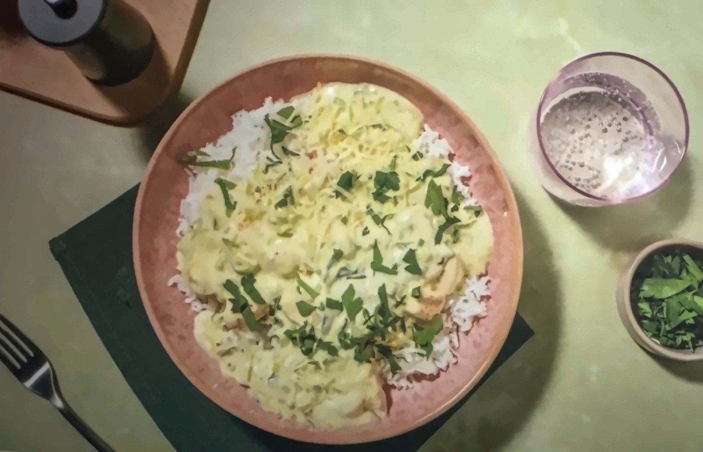
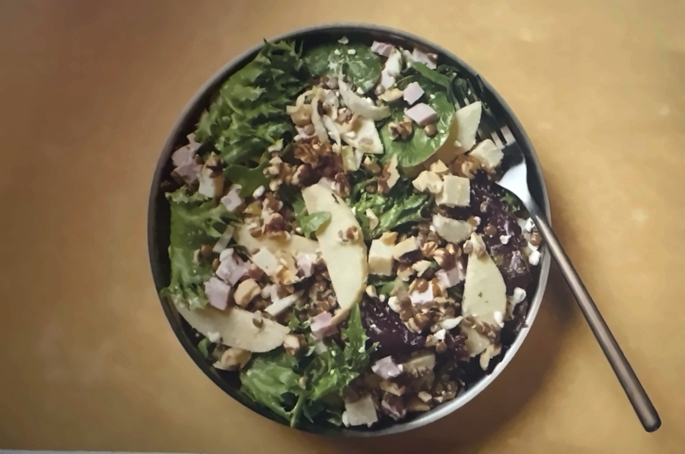
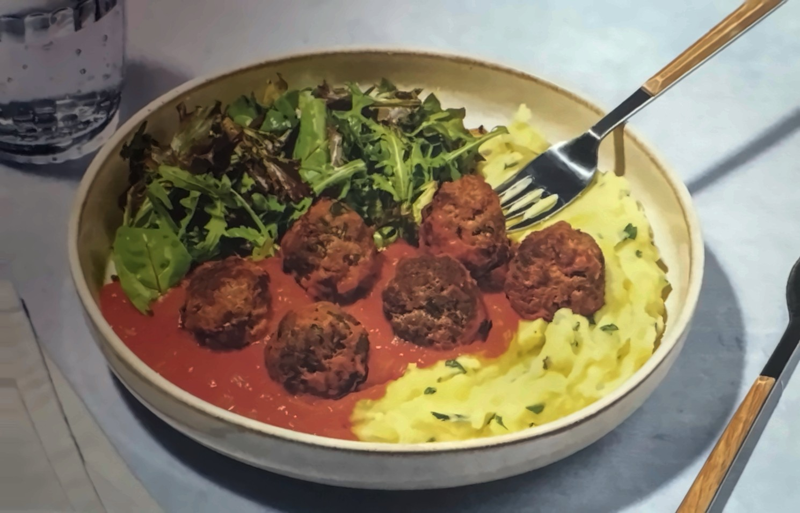
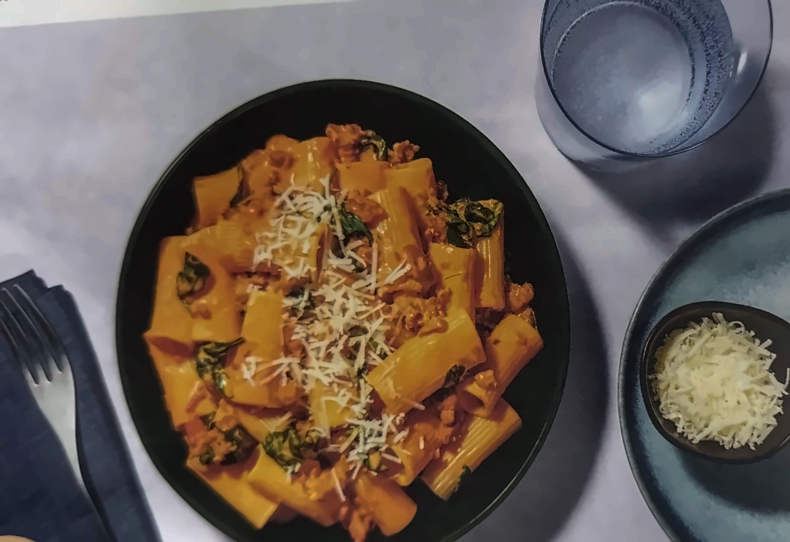
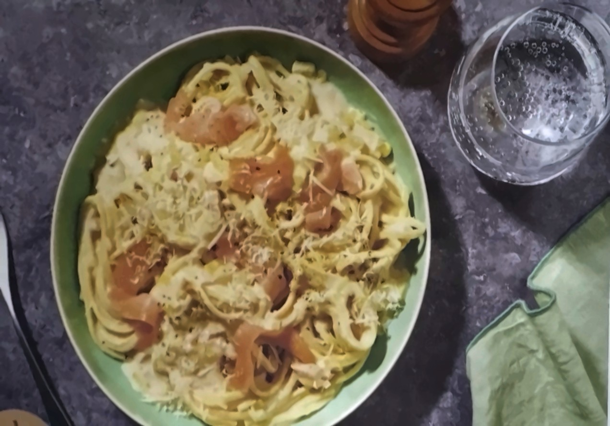
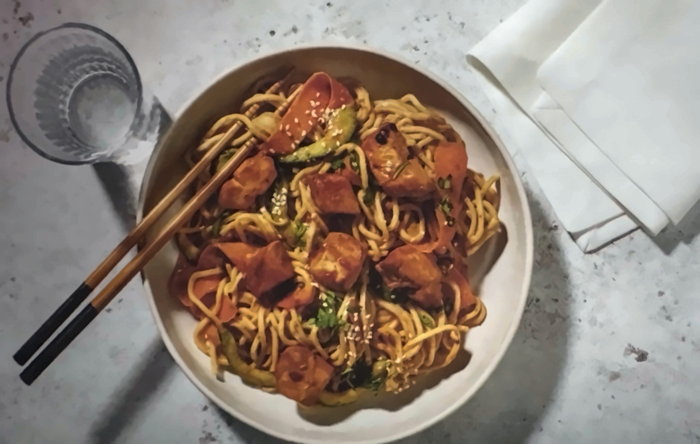

Au menu cette semaine : 7 recettes à cuisiner pas à pas.
Recettes7
Pour6 personnes
ÉditionSemaine 45 | 2026






Sommaire
Au menu
C’est parti ! Planifiez l’ordre des recettes selon la date de péremption inscrite sur l’étiquette de vos ingrédients. Rincez les fruits et légumes.
Recette 204 · 25 – 35 min
Poulet à la crème de poireau & muscade
avec du gouda, du riz & du persil
3
Recette 205 · 15 – 25 min
Salade minute de lentilles, comté AOP & jambon
avec du sarasson & de l’endive
5
Recette 206 · 35 – 45 min
Polpette des Pouilles : boulettes de bœuf
avec de la purée persillée & une salade
7
Recette 225 · 25 – 35 min
Spicy creamy merguez pasta
garnies de pecorino AOP, épinards & citron
9
Recette 234 · 25 – 35 min
Linguine crémeuses au saumon fumé & poireau
avec du fromage râpé
11
Recette 245 · 45 – 55 min
Burger de bœuf, chutney d’oignon & gouda
avec des frites au four & du paprika fumé
13
Recette 251 · 25 – 35 min
La Fraîche : poulet, nouilles & sauce satay
garnie de graines de sésame & coriandre
15
Recettes de la box HelloFresh, retranscrites et remises en page. Quantités pour 6 personnes.
Hello L’Antihéros · Semaine 45 | 20262
Recette 204À table en 25 – 35 minRapide
Poulet à la crème de poireau & muscade
avec du gouda, du riz & du persil
Dans la box pour 6 personnes
Riz450 g
Oignon2 pièce(s)
Poireau*4 pièce(s)
Filet de poulet*6 pièce(s)
Gousse d’ail4 pièce(s)
Persil*1½ sachet(s)
Crème liquide*2 paquet(s)
Gouda râpé*2 sachet(s)
Noix de muscade2 pincée(s)
* à conserver au réfrigérateur
À ajouter vous-même
Huile d’olive3 cs
Beurre3 cs
Poivre et selselon votre goût
Ustensiles
Sauteuse avec couvercle, râpe, casserole avec couvercle, passoire
Notre poulet est 100 % origine France* *En cas de problème d’approvisionnement, nous favorisons des fournisseurs européens de qualité équivalente.
Hello L’Antihéros · Semaine 45 | 20263
Recette 204 · pas à pas
Poulet à la crème de poireau & muscade
1
À vos couteaux !
Veillez à bien respecter les quantités indiquées à gauche pour préparer votre recette !
Portez une casserole d’eau salée à ébullition pour le riz.
Ciselez finement l’oignon. Coupez le poireau en deux dans l’épaisseur, lavez-le bien, puis coupez-le en fines demi-lunes.
Faites cuire le riz 12-14 min dans la casserole, ou jusqu’à ce qu’il soit tendre. Égouttez-le et réservez-le à couvert.
2
Allumer le feu
Coupez le poulet en dés de 2 cm (voir l’astuce).
Faites chauffer un filet d’huile d’olive dans une sauteuse à feu moyen-vif. Faites-y dorer le poulet 3-4 min sur tous les côtés : il ne doit pas encore être totalement cuit. Salez et poivrez. Réservez-le hors de la sauteuse et conservez celle-ci pour l’étape suivante.
L’astuce du chefUne odeur à l’ouverture du poulet est normale : elle est liée à l’emballage qui préserve sa qualité. Laissez-le s’aérer un peu.
3
Au tour du poireau
Remettez la sauteuse à feu moyen-vif et faites-y fondre une noix de beurre. Ajoutez-y l’oignon, le poireau, salez et poivrez. Baissez le feu à moyen, couvrez et faites cuire 8-10 min de plus, ou jusqu’à ce qu’il soit fondant.
Pendant ce temps, ciselez l’ail et le persil séparément.
4
Chaud devant !
Une fois l’oignon et le poireau cuits et fondants, retirez le couvercle. Incorporez le poulet, l’ail, la crème et la moitié du gouda. Râpez un peu de muscade par-dessus (selon votre goût). Mélangez et laissez réduire 5 min à feu doux, ou jusqu’à ce que le poulet soit cuit à cœur.
Servez le riz dans les assiettes et versez le poulet et sa crème au poireau par-dessus. Saupoudrez de persil et du reste de gouda râpé.
Valeurs nutritionnelles
Par portion
Pour 100 g
Énergie (kJ/kcal)
3268 / 781
754 / 180
Lipides total (g)
35
8
dont saturés (g)
19,2
4,4
Glucides (g)
76
17
dont sucres (g)
8,1
1,9
Fibres (g)
4
1
Protéines (g)
46
11
Sel (g)
0,8
0,2
Allergènes
Attention, certains ingrédients peuvent contenir des allergènes. En cas d’allergie, référez-vous aux étiquettes des ingrédients avant de cuisiner. Les allergènes et traces d’allergènes sont indiqués en gras, en italique ou en MAJUSCULE sur les étiquettes.
À vos fourchettes !
Hello L’Antihéros · Semaine 45 | 20264
Recette 205À table en 15 – 25 minSans nitrite
Salade minute de lentilles, comté AOP & jambon
avec du sarasson & de l’endive
Dans la box pour 6 personnes
Lentilles précuites3 paquet(s)
Pomme*3 pièce(s)
Endive*3 pièce(s)
Comté AOP*200 g
Jambon blanc sans nitrite*6 pièce(s)
Sarasson aux herbes*200 g
Herbes de Provence2 sachet(s)
Salade en sachet*2 pièce(s)
Noix concassées1½ sachet(s)
* à conserver au réfrigérateur
À ajouter vous-même
Huile d’olive3 cs
Moutarde6 cc
Poivre et selselon votre goût
Ustensiles
Passoire, saladier, éplucheur
Découvrez le plaisir de notre jambon de porc sans nitrite et d’origine France* *En cas de problème d’approvisionnement, nous favorisons des fournisseurs européens de qualité équivalente.
Hello L’Antihéros · Semaine 45 | 20265
Recette 205 · pas à pas
Salade minute de lentilles, comté AOP & jambon
1
On s’y met !
Veillez à bien respecter les quantités indiquées à gauche pour préparer votre recette !
Égouttez les lentilles et rincez-les sous l’eau froide.
Épluchez et coupez la pomme en quartiers, ôtez-en le trognon, puis coupez les quartiers en fines tranches.
Coupez l’endive en deux dans l’épaisseur et ôtez la partie dure et amère de la base en y prélevant un cône. Coupez l’endive en fines demi-lunes.
L’astuce du chefIl se peut que les premières feuilles de vos endives soient légèrement abîmées ; pensez à les retirer avant de les consommer.
2
Vinaigrette en action
Coupez le comté et le jambon en dés de 1 cm.
Dans un saladier, mélangez le sarasson avec un filet d’huile d’olive et, par personne : 1 cc de moutarde, 1/3 sachet d’herbes de Provence, du sel et du poivre.
3
Mélange des saveurs
Dans le saladier, ajoutez les lentilles, la pomme, les endives, la salade, le comté et le jambon.
Mélangez bien.
4
Bon appétit !
Servez la salade automnale dans les assiettes creuses.
Garnissez avec les noix.
Valeurs nutritionnelles
Par portion
Pour 100 g
Énergie (kJ/kcal)
2481 / 593
514 / 123
Lipides total (g)
31
6
dont saturés (g)
11,2
2,3
Glucides (g)
41
9
dont sucres (g)
11,6
2,4
Fibres (g)
13
3
Protéines (g)
38
8
Sel (g)
3,7
0,8
Allergènes
Attention, certains ingrédients peuvent contenir des allergènes. En cas d’allergie, référez-vous aux étiquettes des ingrédients avant de cuisiner. Les allergènes et traces d’allergènes sont indiqués en gras, en italique ou en MAJUSCULE sur les étiquettes.
À vos fourchettes !
Hello L’Antihéros · Semaine 45 | 20266
Recette 206À table en 35 – 45 min
Polpette des Pouilles : boulettes de bœuf
avec de la purée persillée & une salade
Dans la box pour 6 personnes
Gousse d’ail2 pièce(s)
Oignon3 pièce(s)
Persil*1½ sachet(s)
Pommes de terre1500 g
Fromage râpé à l’italienne*4 sachet(s)
Viande hachée au bœuf*2 paquet(s)
Chair de tomates1½ paquet(s)
Salade en sachet*2 pièce(s)
Assaisonnement ail et herbes1½ sachet(s)
* à conserver au réfrigérateur
À ajouter vous-même
Beurre6 cc
Lait3 cs
Huile d’olive12 cs
Sucre3 cc
Vinaigre balsamique noir3 cs
Poivre et selselon votre goût
Ustensiles
Casserole avec couvercle, éplucheur, presse-purée, 2 saladiers, passoire, poêle
Notre bœuf est 100 % origine France* *En cas de problème d’approvisionnement, nous favorisons des fournisseurs européens de qualité équivalente.
Hello L’Antihéros · Semaine 45 | 20267
Recette 206 · pas à pas
Polpette des Pouilles : boulettes de bœuf
1
On s’y met !
Veillez à bien respecter les quantités indiquées à gauche pour préparer votre recette !
Ciselez finement l’ail, l’oignon et le persil (effeuillez-le au préalable si vous le souhaitez).
Épluchez et coupez les pommes de terre en petits dés de 1-2 cm. Placez-les dans une casserole, salez et versez de l’eau à hauteur.
2
On écrase le tout
Portez la casserole à ébullition et faites cuire les pommes de terre 12-15 min à couvert. Contrôlez la cuisson avec la pointe d’un couteau. Réservez un peu d’eau de cuisson, puis égouttez-les. Réduisez-les en purée avec un presse-purée.
Ajoutez la moitié du persil et de l’ail (selon votre goût, vous allez le manger cru), 1/3 du fromage râpé, ainsi qu’une noix de beurre et un filet de lait ou d’eau de cuisson pour l’onctuosité. Salez et poivrez. Mélangez bien, puis couvrez.
3
Roulez boulettes
Pendant ce temps, placez la viande hachée ainsi que le reste de fromage râpé, d’ail et de persil dans un saladier.
Ajoutez ½ cs de lait par personne, salez et poivrez, puis mélangez bien jusqu’à avoir une farce homogène.
Formez des boulettes (environ 4-5 par personne).
4
Mission cuisson activée
Faites chauffer un généreux filet d’huile d’olive à feu moyen-vif dans une poêle. Faites-y cuire les boulettes sur toutes leurs faces 6-8 min, ou jusqu’à ce qu’elles soient bien dorées et cuites à cœur. Réservez-les hors de la poêle.
Remettez-la sur feu moyen-doux et faites-y revenir l’oignon 2-3 min.
Ajoutez la chair de tomates et, par personne : ¼ sachet d’assaisonnement ail et herbes et ½ cc de sucre. Faites revenir le tout 3-4 min, ou jusqu’à ce que la sauce ait légèrement réduit. Salez et poivrez.
Remettez les polpette dans la poêle et réchauffez-les 1-2 min.
5
La touche vinaigrée
Dans un saladier, faites une vinaigrette en mélangeant un filet de vinaigre balsamique et d’huile d’olive. Salez et poivrez.
Ajoutez la salade au moment de servir et mélangez.
6
Miam, miam !
Servez la salade dans les assiettes.
Ajoutez la purée et les polpette en sauce à côté.
Valeurs nutritionnelles
Par portion
Pour 100 g
Énergie (kJ/kcal)
3590 / 858
607 / 145
Lipides total (g)
54
9
dont saturés (g)
17,4
2,9
Glucides (g)
63
11
dont sucres (g)
11,9
2,0
Fibres (g)
8
1
Protéines (g)
34
6
Sel (g)
2,6
0,4
Allergènes
Attention, certains ingrédients peuvent contenir des allergènes. En cas d’allergie, référez-vous aux étiquettes des ingrédients avant de cuisiner. Les allergènes et traces d’allergènes sont indiqués en gras, en italique ou en MAJUSCULE sur les étiquettes.
À vos fourchettes !
Hello L’Antihéros · Semaine 45 | 20268
Recette 225À table en 25 – 35 minRapideÉpicéIngrédient de saison
Spicy creamy merguez pasta
garnies de pecorino AOP, épinards & citron
Dans la box pour 6 personnes
Gousse d’ail2 pièce(s)
Oignon3 pièce(s)
Citron*1½ pièce(s)
Rigatoni540 g
Merguez*12 pièce(s)
Mascarpone*1½ pot(s)
Piri-piri1½ sachet(s)
Concentré de tomates1½ sachet(s)
Épinards*1½ sachet(s)
Pecorino AOP râpé*1½ sachet(s)
* à conserver au réfrigérateur
À ajouter vous-même
Bouillon cube volaille1½ pièce(s)
Huile d’olive6 cs
Poivre et selselon votre goût
Ustensiles
Sauteuse, passoire, râpe, casserole avec couvercle, 2 spatules
Pour vous, comme pour la planète, nous faisons tout notre possible pour vous proposer des légumes de saison issus de fournisseurs sélectionnés avec soin.
Hello L’Antihéros · Semaine 45 | 20269
Recette 225 · pas à pas
Spicy creamy merguez pasta
1
Pro du couteau
Veillez à bien respecter les quantités indiquées à gauche pour préparer votre recette !
Portez une casserole d’eau à ébullition. Ajoutez-y ¼ cube de bouillon par personne.
Ciselez finement l’ail et l’oignon.
Lavez bien le citron et prélevez-en le zeste avec une râpe fine. Coupez-le en quartiers.
2
Plouf ! Dans la casserole !
Faites cuire les rigatoni 11-13 min dans la casserole.
Réservez ¼ louche d’eau de cuisson des pâtes par personne, puis égouttez-les. Réservez-les à couvert.
3
Ça va chauffer !
Faites chauffer un filet d’huile d’olive dans une sauteuse à feu moyen-vif.
Faites-y revenir l’ail et l’oignon 2-3 min.
Entaillez les merguez dans la longueur et prélevez-en la chair.
Ajoutez la chair des merguez à la sauteuse et faites revenir 3-4 min de plus en émiettant avec une spatule.
4
La sauce qui fait la diff !
Déglacez la sauteuse avec le jus de ¼ citron par personne en prenant bien soin de décoller les sucs avec une spatule.
Ajoutez le mascarpone et, par personne : ¼ sachet de piri-piri (ça pique ! Dosez-le selon le goût) et ¼ de concentré de tomates. Salez et poivrez.
Après avoir lavé les épinards, déchirez-les grossièrement avec vos mains au-dessus de la sauteuse.
Laissez revenir le tout 3 min à feu moyen-vif, ou jusqu’à ce que les épinards flétrissent.
5
Mélange des saveurs
Ajoutez les pâtes à la sauteuse avec l’eau de cuisson réservée, la moitié du pecorino râpé et une pincée de zeste de citron.
Remuez 1-2 min, ou jusqu’à ce que la sauce soit nappante.
6
Prêt à servir, chef !
Servez les rigatoni aux merguez dans des assiettes creuses.
Saupoudrez du reste de pecorino râpé.
Valeurs nutritionnelles
Par portion
Pour 100 g
Énergie (kJ/kcal)
4054 / 969
1099 / 263
Lipides total (g)
57
16
dont saturés (g)
25,5
6,9
Glucides (g)
76
21
dont sucres (g)
9,7
2,6
Fibres (g)
7
2
Protéines (g)
36
10
Sel (g)
4,2
1,1
Allergènes
Attention, certains ingrédients peuvent contenir des allergènes. En cas d’allergie, référez-vous aux étiquettes des ingrédients avant de cuisiner. Les allergènes et traces d’allergènes sont indiqués en gras, en italique ou en MAJUSCULE sur les étiquettes.
À vos fourchettes !
Hello L’Antihéros · Semaine 45 | 202610
Recette 234À table en 25 – 35 minRapideIngrédient de saison
Linguine crémeuses au saumon fumé & poireau
avec du fromage râpé
Dans la box pour 6 personnes
Gousse d’ail4 pièce(s)
Poireau*3 pièce(s)
Citron*1½ pièce(s)
Linguine540 g
Crème liquide*4 paquet(s)
Assaisonnement ail et herbes1½ sachet(s)
Fromage râpé à l’italienne*1½ sachet(s)
Saumon fumé à froid*300 g
* à conserver au réfrigérateur
À ajouter vous-même
Beurre3 cc
Poivre et selselon votre goût
Ustensiles
Sauteuse avec couvercle, passoire, râpe, casserole
Pour vous, comme pour la planète, nous faisons tout notre possible pour vous proposer des légumes de saison issus de fournisseurs sélectionnés avec soin.
Hello L’Antihéros · Semaine 45 | 202611
Recette 234 · pas à pas
Linguine crémeuses au saumon fumé & poireau
1
Chop, chop, c’est parti !
Veillez à bien respecter les quantités indiquées à gauche pour préparer votre recette !
Portez une grande quantité d’eau salée à ébullition dans une casserole pour les pâtes.
Ciselez l’ail. Coupez le poireau en 2 dans l’épaisseur, lavez-le bien, puis ciselez-le très finement.
Lavez bien le citron et prélevez-en le zeste avec une râpe fine. Coupez-le en quartiers.
2
Pâtes en ébullition
Faites cuire les linguine 8-10 min dans la casserole.
Réservez ¼ louche d’eau de cuisson par personne, puis égouttez les pâtes et réservez-les.
3
La sauce qui fait la diff
Faites chauffer une sauteuse à feu moyen-vif.
Ajoutez une noisette de beurre et faites revenir le poireau et l’ail 3-4 min et à couvert. Remuez de temps en temps.
Versez la crème, ¼ sachet d’assaisonnement ail et herbes par personne, l’eau de cuisson des pâtes réservée et laissez mijoter 4-5 min sur feu moyen et à couvert. Salez et poivrez.
L’astuce du chefSi la sauce réduit trop, vous pouvez ajouter un filet d’eau.
4
Service !
Coupez le saumon fumé en dés ou en lanières.
Une fois les pâtes cuites, ajoutez-les dans la sauteuse ainsi que la moitié du saumon et du fromage. Arrosez également de quelques gouttes de jus de citron. Mélangez 1 min.
Servez dans des assiettes creuses. Incorporez le reste de saumon par-dessus. Saupoudrez du reste de fromage et d’une pincée de zeste de citron (selon votre goût). Ajustez l’assaisonnement en sel, poivre et citron si nécessaire.
Valeurs nutritionnelles
Par portion
Pour 100 g
Énergie (kJ/kcal)
3301 / 789
803 / 192
Lipides total (g)
37
9
dont saturés (g)
21,2
5,2
Glucides (g)
80
19
dont sucres (g)
13,1
3,2
Fibres (g)
6
1
Protéines (g)
34
8
Sel (g)
1,9
0,5
Allergènes
Attention, certains ingrédients peuvent contenir des allergènes. En cas d’allergie, référez-vous aux étiquettes des ingrédients avant de cuisiner. Les allergènes et traces d’allergènes sont indiqués en gras, en italique ou en MAJUSCULE sur les étiquettes.
À vos fourchettes !
Hello L’Antihéros · Semaine 45 | 202612
Recette 245À table en 45 – 55 minCompatible Air Fryer15 min de prépaÉpicé
Burger de bœuf, chutney d’oignon & gouda
avec des frites au four & du paprika fumé
Dans la box pour 6 personnes
Pommes de terre1500 g
Oignon4 pièce(s)
Gousse d’ail2 pièce(s)
Viande hachée au bœuf*2 paquet(s)
Paprika fumé en poudre1½ sachet(s)
Gouda râpé*2 sachet(s)
Pain burger6 pièce(s)
Chutney piquant aux oignons*120 g
* à conserver au réfrigérateur
À ajouter vous-même
Huile d’olive4 cs
Beurre3 cs
Moutarde3 cc
Poivre et selselon votre goût
Ustensiles
Plaque de cuisson recouverte de papier sulfurisé, bol, essuie-tout, éplucheur, poêle
Notre bœuf est 100 % origine France* *En cas de problème d’approvisionnement, nous favorisons des fournisseurs européens de qualité équivalente.
Hello L’Antihéros · Semaine 45 | 202613
Recette 245 · pas à pas
Burger de bœuf, chutney d’oignon & gouda
1
Comment avoir la frite !
Veillez à bien respecter les quantités indiquées à gauche pour préparer votre recette !
Préchauffez le four à 220 °C (200 °C chaleur tournante).
Lavez les pommes de terre et coupez-les en frites de 1 cm d’épaisseur. Épongez-les avec de l’essuie-tout. Sur une plaque recouverte de papier sulfurisé, mélangez-les avec un filet d’huile d’olive, du sel et du poivre (voir l’astuce).
Enfournez-les 25-35 min. Remuez à mi-cuisson.
Make it AirfryerPlacez les frites dans le panier de cuisson avec un filet d’huile d’olive, du sel et du poivre. Faites cuire 18-22 min à 180 °C, en secouant le panier toutes les 5-6 min pour une cuisson uniforme et bien dorée.
2
Chaud devant !
Coupez l’oignon en demi-lunes. Émincez l’ail.
Dans un bol, mélangez avec vos mains le bœuf avec ¼ sachet de paprika fumé par personne, l’ail, du sel et du poivre. Pressez-le et façonnez-le en steaks (un par personne) de 2 cm d’épaisseur.
Faites fondre le beurre dans une poêle à feu moyen-vif. Faites-y cuire les oignons ainsi que les steaks 2-4 min de chaque côté, ou jusqu’à ce que la viande soit cuite à cœur (voir l’astuce).
Répartissez le gouda sur les steaks, ajoutez 1 cs d’eau à la poêle, couvrez et laissez le fromage fondre 1 min.
L’astuce du chefAdaptez la cuisson à votre goût : réduisez ou prolongez le temps de cuisson pour une viande saignante ou bien cuite.
3
Un tour au four
Lorsqu’il reste environ 5 min de cuisson aux frites, enfournez les pains burger à côté.
À la fin de la cuisson, coupez les pains burger en deux.
Étalez un peu de moutarde sur la base, puis du chutney d’oignons (ça pique ! Dosez-le selon votre goût).
Déposez la viande sur la partie basse du pain, ajoutez l’oignon poêlé et refermez le burger.
4
Showtime
Servez les burgers dans les assiettes.
Accompagnez-les des frites.
Valeurs nutritionnelles
Par portion
Pour 100 g
Énergie (kJ/kcal)
4163 / 995
780 / 186
Lipides total (g)
47
9
dont saturés (g)
21,5
4,0
Glucides (g)
105
20
dont sucres (g)
18,9
3,5
Fibres (g)
9
2
Protéines (g)
40
8
Sel (g)
3,2
0,6
Allergènes
Attention, certains ingrédients peuvent contenir des allergènes. En cas d’allergie, référez-vous aux étiquettes des ingrédients avant de cuisiner. Les allergènes et traces d’allergènes sont indiqués en gras, en italique ou en MAJUSCULE sur les étiquettes.
À vos fourchettes !
Hello L’Antihéros · Semaine 45 | 202614
Recette 251À table en 25 – 35 minRiche en protéinesRapideÉpicé
Notre poulet est 100 % origine France* *En cas de problème d’approvisionnement, nous favorisons des fournisseurs européens de qualité équivalente.
Hello L’Antihéros · Semaine 45 | 202615
Recette 251 · pas à pas
La Fraîche : poulet, nouilles & sauce satay
1
Éplucheur en action
Veillez à bien respecter les quantités indiquées à gauche pour préparer votre recette !
Portez une casserole d’eau salée à ébullition pour les nouilles.
Râpez l’ail et le gingembre, puis épépinez et ciselez le piment (ça pique ! Dosez-les selon votre goût). Ciselez la coriandre. Épluchez et taillez la carotte en rubans avec un éplucheur (vous pouvez aussi la râper si vous le préférez). Coupez le concombre en deux dans l’épaisseur, retirez-en les graines avec une cuillère, puis coupez-le en demi-lunes.
Recoupez le poulet en plus petits dés si nécessaire.
2
Allumer le feu
Faites chauffer une poêle à feu moyen-vif avec un filet d’huile de tournesol. Faites-y revenir le poulet, le piment, la moitié de l’ail et du gingembre 3-5 min.
Poivrez et ajoutez la moitié de la sauce soja. Faites revenir 2-3 min de plus, ou jusqu’à ce que le poulet soit opaque et cuit à cœur.
L’astuce du chefUne odeur à l’ouverture du poulet est normale : elle est liée à l’emballage qui préserve sa qualité. Laissez-le s’aérer un peu.
3
Sauce qui peut !
Faites cuire 50 g de nouilles par personne 2-3 min dans la casserole. Égouttez-les et rincez-les à l’eau froide pour qu’elles ne collent pas entre elles.
Dans un saladier, mélangez le beurre de cacahuètes (selon votre goût) avec un généreux filet d’huile de tournesol, l’huile de sésame, le vinaigre balsamique blanc (ou de riz) et la cassonade. Ajoutez le reste d’ail, de gingembre et de sauce soja et un filet d’eau pour fluidifier la sauce. Mélangez.
L’astuce du chefVous pouvez aussi laisser les nouilles tiédir si vous préférez manger ce plat chaud.
4
Miam, miam !
Ajoutez les nouilles à la sauce avec la carotte, le concombre et la moitié des graines de sésame. Salez, poivrez et mélangez délicatement.
Servez la salade dans des bols ou des assiettes creuses. Placez le poulet par-dessus.
Saupoudrez avec la coriandre et le reste de graines de sésame.
Valeurs nutritionnelles
Par portion
Pour 100 g
Énergie (kJ/kcal)
2611 / 624
619 / 148
Lipides total (g)
31
7
dont saturés (g)
6,0
1,4
Glucides (g)
56
13
dont sucres (g)
14,0
3,3
Fibres (g)
14
3
Protéines (g)
35
8
Sel (g)
2,6
0,6
Allergènes
Attention, certains ingrédients peuvent contenir des allergènes. En cas d’allergie, référez-vous aux étiquettes des ingrédients avant de cuisiner. Les allergènes et traces d’allergènes sont indiqués en gras, en italique ou en MAJUSCULE sur les étiquettes.